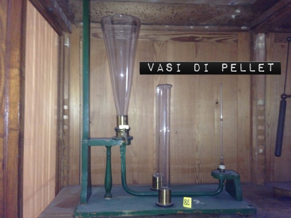

Vasi di Pellat
Scuola di provenienza: Liceo Classico “P. Colletta”", Avellino
Settore: Idraulica
Costruttori: Sconosciuto
Materiali: Vetro, legno, ottone, ferro e mercurio
Accessori: Vasi (3) di varie forme e dimensioni
Stato di conservazione: Il legno è da curare e il colore da rifare
Descrizione: È costituito da un tubo, di vetro su ghiera metallica collegata con un tubo di vetro contenente mercurio. Inserendo dell´acqua nel tubo, questa esercita una pressione che tiene ad una certa altezza il mercurio. Cambiando la forma del tubo di vetro, la pressione sotto al mercurio rimane invariata, perché dipende solo dall´altezza del tubo e non dalla quantità d´acqua.